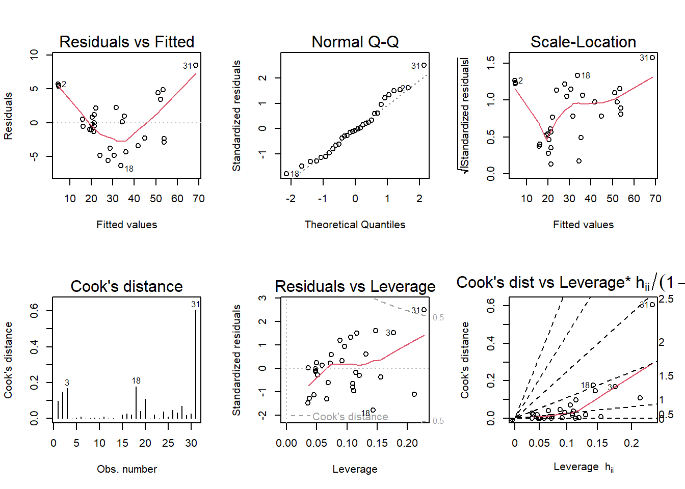

Code
library(tidyverse)
library(alr4)
library(smss)
knitr::opts_chunk$set(echo = TRUE)library(tidyverse)
library(alr4)
library(smss)
knitr::opts_chunk$set(echo = TRUE)data(house.selling.price)
house.selling.price case Taxes Beds Baths New Price Size
1 1 3104 4 2 0 279900 2048
2 2 1173 2 1 0 146500 912
3 3 3076 4 2 0 237700 1654
4 4 1608 3 2 0 200000 2068
5 5 1454 3 3 0 159900 1477
6 6 2997 3 2 1 499900 3153
7 7 4054 3 2 0 265500 1355
8 8 3002 3 2 1 289900 2075
9 9 6627 5 4 0 587000 3990
10 10 320 3 2 0 70000 1160
11 11 630 3 2 0 64500 1220
12 12 1780 3 2 0 167000 1690
13 13 1630 3 2 0 114600 1380
14 14 1530 3 2 0 103000 1590
15 15 930 3 1 0 101000 1050
16 16 590 2 1 0 70000 770
17 17 1050 3 2 0 85000 1410
18 18 20 3 1 0 22500 1060
19 19 870 2 2 0 90000 1300
20 20 1320 3 2 0 133000 1500
21 21 1350 2 1 0 90500 820
22 22 5616 4 3 1 577500 3949
23 23 680 2 1 0 142500 1170
24 24 1840 3 2 0 160000 1500
25 25 3680 4 2 0 240000 2790
26 26 1660 3 1 0 87000 1030
27 27 1620 3 2 0 118600 1250
28 28 3100 3 2 0 140000 1760
29 29 2070 2 3 0 148000 1550
30 30 830 3 2 0 69000 1120
31 31 2260 4 2 0 176000 2000
32 32 1760 3 1 0 86500 1350
33 33 2750 3 2 1 180000 1840
34 34 2020 4 2 0 179000 2510
35 35 4900 3 3 1 338000 3110
36 36 1180 4 2 0 130000 1760
37 37 2150 3 2 0 163000 1710
38 38 1600 2 1 0 125000 1110
39 39 1970 3 2 0 100000 1360
40 40 2060 3 1 0 100000 1250
41 41 1980 3 1 0 100000 1250
42 42 1510 3 2 0 146500 1480
43 43 1710 3 2 0 144900 1520
44 44 1590 3 2 0 183000 2020
45 45 1230 3 2 0 69900 1010
46 46 1510 2 2 0 60000 1640
47 47 1450 2 2 0 127000 940
48 48 970 3 2 0 86000 1580
49 49 150 2 2 0 50000 860
50 50 1470 3 2 0 137000 1420
51 51 1850 3 2 0 121300 1270
52 52 820 2 1 0 81000 980
53 53 2050 4 2 0 188000 2300
54 54 710 3 2 0 85000 1430
55 55 1280 3 2 0 137000 1380
56 56 1360 3 2 0 145000 1240
57 57 830 3 2 0 69000 1120
58 58 800 3 2 0 109300 1120
59 59 1220 3 2 0 131500 1900
60 60 3360 4 3 0 200000 2430
61 61 210 3 2 0 81900 1080
62 62 380 2 1 0 91200 1350
63 63 1920 4 3 0 124500 1720
64 64 4350 3 3 0 225000 4050
65 65 1510 3 2 0 136500 1500
66 66 4154 3 3 0 381000 2581
67 67 1976 3 2 1 250000 2120
68 68 3605 3 3 1 354900 2745
69 69 1400 3 2 0 140000 1520
70 70 790 2 2 0 89900 1280
71 71 1210 3 2 0 137000 1620
72 72 1550 3 2 0 103000 1520
73 73 2800 3 2 0 183000 2030
74 74 2560 3 2 0 140000 1390
75 75 1390 4 2 0 160000 1880
76 76 5443 3 2 0 434000 2891
77 77 2850 2 1 0 130000 1340
78 78 2230 2 2 0 123000 940
79 79 20 2 1 0 21000 580
80 80 1510 4 2 0 85000 1410
81 81 710 3 2 0 69900 1150
82 82 1540 3 2 0 125000 1380
83 83 1780 3 2 1 162600 1470
84 84 2920 2 2 1 156900 1590
85 85 1710 3 2 1 105900 1200
86 86 1880 3 2 0 167500 1920
87 87 1680 3 2 0 151800 2150
88 88 3690 5 3 0 118300 2200
89 89 900 2 2 0 94300 860
90 90 560 3 1 0 93900 1230
91 91 2040 4 2 0 165000 1140
92 92 4390 4 3 1 285000 2650
93 93 690 3 1 0 45000 1060
94 94 2100 3 2 0 124900 1770
95 95 2880 4 2 0 147000 1860
96 96 990 2 2 0 176000 1060
97 97 3030 3 2 0 196500 1730
98 98 1580 3 2 0 132200 1370
99 99 1770 3 2 0 88400 1560
100 100 1430 3 2 0 127200 1340For backward elimination, which variable would be deleted first? Why?
‘Beds’ would be the variable that would be deleted first because it has the highest p-value.
For forward selection, which variable would be added first? Why?
‘New’ and ‘Size’ are two variables that would be added first because it has the smallest p-value. However, looking at the correlation matrix ‘Size’ has a higher correlation (0.89) with ‘Price’ than ‘New’ (0.357), so ‘Size’ would be added first.
Why do you think that BEDS has such a large P-value in the multiple regression model, even though it has a substantial correlation with PRICE?
I think that ‘Beds’ has a large p-value because there are too many variables and or redundant interaction terms. I think also the fact that there are only 100 observations does not get an large enough sample which causes for such a high p-value in ‘Beds.’
Using software with these four predictors, find the model that would be selected using each criterion:
hsp<-lm(Price~ .-Taxes - case, data = house.selling.price)
hsp2<- lm(Price~ .- Taxes - case- Beds, data = house.selling.price)
hsp3<- lm (Price~ .- Taxes - case- Beds - Baths, data = house.selling.price)
hsp4<- lm (Price~ .- Taxes - case- Beds-New, data = house.selling.price)summary(hsp)
Call:
lm(formula = Price ~ . - Taxes - case, data = house.selling.price)
Residuals:
Min 1Q Median 3Q Max
-215747 -30833 -5574 18800 164471
Coefficients:
Estimate Std. Error t value Pr(>|t|)
(Intercept) -28849.22 27261.16 -1.058 0.29262
Beds -8202.38 10449.84 -0.785 0.43445
Baths 5273.78 13080.17 0.403 0.68772
New 54562.38 19214.89 2.840 0.00553 **
Size 118.12 12.32 9.585 1.27e-15 ***
---
Signif. codes: 0 '***' 0.001 '**' 0.01 '*' 0.05 '.' 0.1 ' ' 1
Residual standard error: 54250 on 95 degrees of freedom
Multiple R-squared: 0.7245, Adjusted R-squared: 0.713
F-statistic: 62.47 on 4 and 95 DF, p-value: < 2.2e-16summary(hsp2)
Call:
lm(formula = Price ~ . - Taxes - case - Beds, data = house.selling.price)
Residuals:
Min 1Q Median 3Q Max
-204134 -34520 -5483 18325 161674
Coefficients:
Estimate Std. Error t value Pr(>|t|)
(Intercept) -43433.23 19908.84 -2.182 0.03158 *
Baths 3057.13 12746.12 0.240 0.81096
New 57745.94 18744.37 3.081 0.00269 **
Size 114.42 11.36 10.070 < 2e-16 ***
---
Signif. codes: 0 '***' 0.001 '**' 0.01 '*' 0.05 '.' 0.1 ' ' 1
Residual standard error: 54140 on 96 degrees of freedom
Multiple R-squared: 0.7228, Adjusted R-squared: 0.7141
F-statistic: 83.42 on 3 and 96 DF, p-value: < 2.2e-16summary(hsp3)
Call:
lm(formula = Price ~ . - Taxes - case - Beds - Baths, data = house.selling.price)
Residuals:
Min 1Q Median 3Q Max
-205102 -34374 -5778 18929 163866
Coefficients:
Estimate Std. Error t value Pr(>|t|)
(Intercept) -40230.867 14696.140 -2.738 0.00737 **
New 57736.283 18653.041 3.095 0.00257 **
Size 116.132 8.795 13.204 < 2e-16 ***
---
Signif. codes: 0 '***' 0.001 '**' 0.01 '*' 0.05 '.' 0.1 ' ' 1
Residual standard error: 53880 on 97 degrees of freedom
Multiple R-squared: 0.7226, Adjusted R-squared: 0.7169
F-statistic: 126.3 on 2 and 97 DF, p-value: < 2.2e-16summary(hsp4)
Call:
lm(formula = Price ~ . - Taxes - case - Beds - New, data = house.selling.price)
Residuals:
Min 1Q Median 3Q Max
-235844 -27889 -2667 20749 154091
Coefficients:
Estimate Std. Error t value Pr(>|t|)
(Intercept) -54042.0 20449.0 -2.643 0.00959 **
Baths 2972.8 13292.2 0.224 0.82350
Size 124.9 11.3 11.053 < 2e-16 ***
---
Signif. codes: 0 '***' 0.001 '**' 0.01 '*' 0.05 '.' 0.1 ' ' 1
Residual standard error: 56460 on 97 degrees of freedom
Multiple R-squared: 0.6954, Adjusted R-squared: 0.6891
F-statistic: 110.7 on 2 and 97 DF, p-value: < 2.2e-16#hsp
res<- resid(hsp)
p<- resid(hsp)/(1-lm.influence(hsp)$hat)
PRESS<- sum(p^2)
PRESS[1] 366008520409#hsp2
res2<- resid(hsp2)
p2<- resid(hsp2)/(1-lm.influence(hsp2)$hat)
PRESS2<- sum(p2^2)
PRESS2[1] 3.43386e+11#hsp3
res3<- resid(hsp3)
p3<- resid(hsp3)/(1-lm.influence(hsp3)$hat)
PRESS3<- sum(p3^2)
PRESS3[1] 3.33901e+11#hsp4
res4<- resid(hsp4)
p4<- resid(hsp4)/(1-lm.influence(hsp4)$hat)
PRESS4<- sum(p4^2)
PRESS4[1] 361316756861AIC(hsp)[1] 2470.942AIC(hsp2)[1] 2469.588AIC(hsp3)[1] 2467.648AIC(hsp4)[1] 2477.016BIC(hsp)[1] 2486.573BIC(hsp2)[1] 2482.614BIC(hsp3)[1] 2478.069BIC(hsp4)[1] 2487.437Explain which model you prefer and why.
I prefer using the AIC or BIC model because they penalize the addition of variables and the smaller the output value is the better the model is.
data(trees)
trees Girth Height Volume
1 8.3 70 10.3
2 8.6 65 10.3
3 8.8 63 10.2
4 10.5 72 16.4
5 10.7 81 18.8
6 10.8 83 19.7
7 11.0 66 15.6
8 11.0 75 18.2
9 11.1 80 22.6
10 11.2 75 19.9
11 11.3 79 24.2
12 11.4 76 21.0
13 11.4 76 21.4
14 11.7 69 21.3
15 12.0 75 19.1
16 12.9 74 22.2
17 12.9 85 33.8
18 13.3 86 27.4
19 13.7 71 25.7
20 13.8 64 24.9
21 14.0 78 34.5
22 14.2 80 31.7
23 14.5 74 36.3
24 16.0 72 38.3
25 16.3 77 42.6
26 17.3 81 55.4
27 17.5 82 55.7
28 17.9 80 58.3
29 18.0 80 51.5
30 18.0 80 51.0
31 20.6 87 77.0fit a multiple regression model with the Volume as the outcome and Girth and Height as the explanatory variables.
t<- lm(Volume ~ Girth + Height, data = trees)
summary(t)
Call:
lm(formula = Volume ~ Girth + Height, data = trees)
Residuals:
Min 1Q Median 3Q Max
-6.4065 -2.6493 -0.2876 2.2003 8.4847
Coefficients:
Estimate Std. Error t value Pr(>|t|)
(Intercept) -57.9877 8.6382 -6.713 2.75e-07 ***
Girth 4.7082 0.2643 17.816 < 2e-16 ***
Height 0.3393 0.1302 2.607 0.0145 *
---
Signif. codes: 0 '***' 0.001 '**' 0.01 '*' 0.05 '.' 0.1 ' ' 1
Residual standard error: 3.882 on 28 degrees of freedom
Multiple R-squared: 0.948, Adjusted R-squared: 0.9442
F-statistic: 255 on 2 and 28 DF, p-value: < 2.2e-16Run regression diagnostic plots on the model. Based on the plots, do you think any of the regression assumptions is violated?
par(mfrow = c (2,3)); plot(t,which = 1:6)
After running a diagnostic plot on the models I think that the Residuals vs Fitted and Scale- Location have been violated in the regression assumptions.
Residuals vs Fitted graph the residuals should be more uniform and in an arch that is surrounding the red line.
Scale-Location residuals should be more uniform and surrounding the red line.
data(florida)
florida Gore Bush Buchanan
ALACHUA 47300 34062 262
BAKER 2392 5610 73
BAY 18850 38637 248
BRADFORD 3072 5413 65
BREVARD 97318 115185 570
BROWARD 386518 177279 789
CALHOUN 2155 2873 90
CHARLOTTE 29641 35419 182
CITRUS 25501 29744 270
CLAY 14630 41745 186
COLLIER 29905 60426 122
COLUMBIA 7047 10964 89
DADE 328702 289456 561
DE SOTO 3322 4256 36
DIXIE 1825 2698 29
DUVAL 107680 152082 650
ESCAMBIA 40958 73029 504
FLAGLER 13891 12608 83
FRANKLIN 2042 2448 33
GADSDEN 9565 4750 39
GILCHRIST 1910 3300 29
GLADES 1420 1840 9
GULF 2389 3546 71
HAMILTON 1718 2153 24
HARDEE 2341 3764 30
HENDRY 3239 4743 22
HERNANDO 32644 30646 242
HIGHLANDS 14152 20196 99
HILLSBOROUGH 166581 176967 836
HOLMES 2154 4985 76
INDIAN RIVER 19769 28627 105
JACKSON 6868 9138 102
JEFFERSON 3038 2481 29
LAFAYETTE 788 1669 10
LAKE 36555 49963 289
LEE 73560 106141 305
LEON 61425 39053 282
LEVY 5403 6860 67
LIBERTY 1011 1316 39
MADISON 3011 3038 29
MANATEE 49169 57948 272
MARION 44648 55135 563
MARTIN 26619 33864 108
MONROE 16483 16059 47
NASSAU 6952 16404 90
OKALOOSA 16924 52043 267
OKEECHOBEE 4588 5058 43
ORANGE 140115 134476 446
OSCEOLA 28177 26216 145
PALM BEACH 268945 152846 3407
PASCO 69550 68581 570
PINELLAS 199660 184312 1010
POLK 74977 90101 538
PUTNAM 12091 13439 147
ST. JOHNS 19482 39497 229
ST. LUCIE 41559 34705 124
SANTA ROSA 12795 36248 311
SARASOTA 72854 83100 305
SEMINOLE 58888 75293 194
SUMTER 9634 12126 114
SUWANNEE 4084 8014 108
TAYLOR 2647 4051 27
UNION 1399 2326 26
VOLUSIA 97063 82214 396
WAKULLA 3835 4511 46
WALTON 5637 12176 120
WASHINGTON 2796 4983 88Run a simple linear regression model where the Buchanan vote is the outcome and the Bush vote is the explanatory variable. Produce the regression diagnostic plots. Is Palm Beach County an outlier based on the diagnostic plots? Why or why not?
flo<-lm(Buchanan ~ Bush, data = florida)
summary(flo)
Call:
lm(formula = Buchanan ~ Bush, data = florida)
Residuals:
Min 1Q Median 3Q Max
-907.50 -46.10 -29.19 12.26 2610.19
Coefficients:
Estimate Std. Error t value Pr(>|t|)
(Intercept) 4.529e+01 5.448e+01 0.831 0.409
Bush 4.917e-03 7.644e-04 6.432 1.73e-08 ***
---
Signif. codes: 0 '***' 0.001 '**' 0.01 '*' 0.05 '.' 0.1 ' ' 1
Residual standard error: 353.9 on 65 degrees of freedom
Multiple R-squared: 0.3889, Adjusted R-squared: 0.3795
F-statistic: 41.37 on 1 and 65 DF, p-value: 1.727e-08par(mfrow = c (2,3)); plot(flo,which = 1:6)
Based on the diagnostic plots ‘Palm Beach’ is an outlier. Most of the residuals are grouped together don’t violate the the regression assumptions. However, in all of the plots the ‘Palm Beach’ residual violates all of the regression assumptions. For example, in the Residuals vs Fitted plot the data is uniform and linear. The ‘Palm Beach’ residual is no where near the rest of the residuals.
Take the log of both variables (Bush vote and Buchanan Vote) and repeat the analysis in (a). Does your findings change?
log_flo<- lm(log(Buchanan) ~ log(Bush), data = florida)
summary(log_flo)
Call:
lm(formula = log(Buchanan) ~ log(Bush), data = florida)
Residuals:
Min 1Q Median 3Q Max
-0.96075 -0.25949 0.01282 0.23826 1.66564
Coefficients:
Estimate Std. Error t value Pr(>|t|)
(Intercept) -2.57712 0.38919 -6.622 8.04e-09 ***
log(Bush) 0.75772 0.03936 19.251 < 2e-16 ***
---
Signif. codes: 0 '***' 0.001 '**' 0.01 '*' 0.05 '.' 0.1 ' ' 1
Residual standard error: 0.4673 on 65 degrees of freedom
Multiple R-squared: 0.8508, Adjusted R-squared: 0.8485
F-statistic: 370.6 on 1 and 65 DF, p-value: < 2.2e-16par(mfrow = c (2,3)); plot(log_flo,which = 1:6)
Yes, the findings did change after I logged ‘Buchanan’ and ‘Bush.’ After running a diagnostic plot the Residuals vs Fitted residuals are more uniform and evenly dispersed across the line. The scale-location has a similar pattern as the Residuals vs Fitted, there is more uniformity and even dispersement of residuals. Furthermore, the Normal Q-Q residuals seem to be better fit to the line because there are linear and uniform.